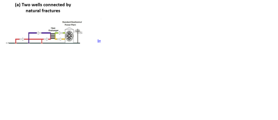
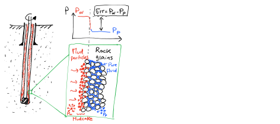
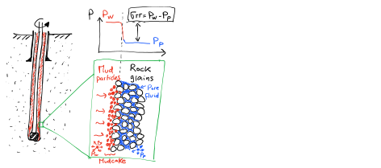

Next: 2.2 Non-hydrostatic pore pressure Up: 2. Subsurface Stresses and Previous: 2. Subsurface Stresses and Contents
The lithostatic stress gradient is the variation of total vertical stress  with vertical depth (usually referred as true depth in petroleum engineering).
The following subsections review the fundamental concepts of stress, stress equilibrium, and effective stress.
with vertical depth (usually referred as true depth in petroleum engineering).
The following subsections review the fundamental concepts of stress, stress equilibrium, and effective stress.
Consider the solid bar in Figure 2.1.
Two forces
 and
pull the bar in opposite directions.
Underlining indicates the variable is a vector in
and
pull the bar in opposite directions.
Underlining indicates the variable is a vector in
 (three dimensions).
Equilibrium requires summation of (vectorial) forces to be zero, hence,
(three dimensions).
Equilibrium requires summation of (vectorial) forces to be zero, hence,
 .
If the solid bar has a weight, then equilibrium requires
.
If the solid bar has a weight, then equilibrium requires
 , the difference is the weight
.
, the difference is the weight
.
Stress is defined as force  over area
over area  (perpendicular to the force) such that
(perpendicular to the force) such that
 |
(2.1) |
The units of stress are [Force]/[Area]: MPa, psi, etc., but it does not necessarily mean stress is a pressure! Stress depends on the direction in which is measured, while pressure is the same in all directions. The directionality of stress is a result of the solid capacity to resist shear stresses.
In a 3D porous solid with volume
 (Figure 2.2), equilibrium requires the summation of (vectorial) forces in all directions to be zero
 .
Equilibrium of forces in the vertical direction (gravity
.
Equilibrium of forces in the vertical direction (gravity  direction) requires
(forces in vertical direction).
Hence,
direction) requires
(forces in vertical direction).
Hence,
 |
(2.2) | ||
 |
(2.3) | ||
 |
(2.4) |
Considering infinitesimal variations yields the following equation
 |
(2.5) |
The term within the integral in the right-hand-side
 is called the vertical total stress gradient, or sometimes, simply as lithostatic stress gradient.
In a semi-infinite medium (e.g. approximation of the Earth's surface)
is called the vertical total stress gradient, or sometimes, simply as lithostatic stress gradient.
In a semi-infinite medium (e.g. approximation of the Earth's surface)
 .
.
If
 , then vertical stress as a function of depth
, then vertical stress as a function of depth  is
is
The total vertical stress is a compressive stress and by convention in geomechanics we assign it a positive sign.
EXAMPLE 2.1:
Assume a rock made of 100% quartz (mass density
 ) with 20% porosity filled with water (mass density ).
What is the lithostatic stress gradient?
) with 20% porosity filled with water (mass density ).
What is the lithostatic stress gradient?
SOLUTION
The bulk (volume average) rock mass density
 depends on porosity , volume fractions of mineral phases, and volume fractions of fluid phases.
For a water-saturated rock:
depends on porosity , volume fractions of mineral phases, and volume fractions of fluid phases.
For a water-saturated rock:
 |
 kg/m and
kg/m (check out https://www.spec2000.net/05-mineralprops.htm).
Then,
kg/m and
kg/m (check out https://www.spec2000.net/05-mineralprops.htm).
Then,
kg/m kg/m kg/m kg/m kg/m |
 kg/m kg/m m/s m/s Pa/m MPa/km Pa/m MPa/km |
Typical vertical stress gradient are around psi/ft  MPa/km for porosity
.
Hydrostatic pore pressure gradient is psi/ft
MPa/km for porosity
.
Hydrostatic pore pressure gradient is psi/ft  MPa/km.
You may use fluid saturations
MPa/km.
You may use fluid saturations
 if the rock has two or more fluids in the pore space to accurately calculate the vertical stress gradient.
You may also use the corresponding mineral volume fractions if the rock is comprised of two or more minerals, e.g., a dolomite-rich shale.
if the rock has two or more fluids in the pore space to accurately calculate the vertical stress gradient.
You may also use the corresponding mineral volume fractions if the rock is comprised of two or more minerals, e.g., a dolomite-rich shale.
Now that we have the stress gradient, we can calculate total stress at a given depth. Let's consider two cases: onshore and offshore.
First, consider an onshore scenario in which the surface coincides with the water table (in most practical applications this is a reasonable assumption).
Assume a constant fluid density and constant bulk rock mass density
(remember that it includes fluids within pores).
Then, the pore pressure gradient as a function of depth will be
as long as there is a connected pore network path from the surface to the depth , such that the fluid is in hydrostatic equilibrium (it may not happen sometimes).
The total vertical stress gradient as a function of depth is calculated with Equation 2.6 because in onshore conditions the assumption of constant bulk mass density with depth is acceptable.
Both (hydrostatic)  and increase linearly with depth with constant mass densities (Figure 2.3).
and increase linearly with depth with constant mass densities (Figure 2.3).
The difference between total stress and pore pressure is called “effective stress”; hence, the effective vertical stress is
Effective stresses in the subsurface are mostly compressive. Compressive effective stress holds rock together and compacts them.
Notice that  must hold in order to have a compressive effective vertical stress.
We will see later that effective stress is a very important quantity and dictates rock deformation and failure.
Figure 2.4 shows an example of effective stress making cohesionless ground coffee strong and stiff like a brick.
You will see this example in class how I stand on a “brick” of ground coffee thanks to Terzaghi's effective stress and how effective stress strengthens the coffee pack due to friction forces.
must hold in order to have a compressive effective vertical stress.
We will see later that effective stress is a very important quantity and dictates rock deformation and failure.
Figure 2.4 shows an example of effective stress making cohesionless ground coffee strong and stiff like a brick.
You will see this example in class how I stand on a “brick” of ground coffee thanks to Terzaghi's effective stress and how effective stress strengthens the coffee pack due to friction forces.
Similar to the membrane effect conceptualized in Figure 2.4, the mudcake that forms around a wellbore during drilling provides an effective stress to the surrounding rock.
This is a result of the sharp pressure gradient between the mud pressure in the well  and the pore pressure in the formation (Figure 6.2).
and the pore pressure in the formation (Figure 6.2).
 |
EXAMPLE 2.2:
Compute the pore pressure and vertical stress at 4000 ft of depth (True Vertical Depth: TVD) underneath an onshore drilling rig.
The pore pressure gradient is hydrostatic with brine mass density of 1.04 g/cm and the average rock bulk mass density is about 2.35 g/cm.
Make a plot of pressure and vertical stress versus depth.
Show results in MPa and psi.
SOLUTION
The corresponding hydrostatic and lithostatic gradients are
 kg/m m/s kg/m m/s MPa/km MPa/km |
 kg/m m/s kg/m m/s MPa/km MPa/km |
 MPa/km MPa/km km MPa km MPa psi psi |
MPa/km km MPa psi psi |
In an offshore case we have to take into account the presence of overlying water weight proportional to thickness  .
Again, let us assume constant mass densities for simplicity.
In the water, you cannot define a stress because there is no solid phase.
Within the water zone, fluid pressure will increase according to Eq. 2.7.
This fluid pressure will continue increasing within the seafloor sediments as long as there is a connected pore network from the seafloor to depth .
Stresses start to develop at the seafloor beyond depth
.
Again, let us assume constant mass densities for simplicity.
In the water, you cannot define a stress because there is no solid phase.
Within the water zone, fluid pressure will increase according to Eq. 2.7.
This fluid pressure will continue increasing within the seafloor sediments as long as there is a connected pore network from the seafloor to depth .
Stresses start to develop at the seafloor beyond depth  (Figure 2.6), such that the total vertical stress will be
(Figure 2.6), such that the total vertical stress will be
| for | (2.9) |
Notice that the total stress does not start at 0 at the seafloor  .
However, the important and “physically meaningful” quantity is effective stress and this one does start at zero at the seafloor.
.
However, the important and “physically meaningful” quantity is effective stress and this one does start at zero at the seafloor.
| for | (2.10) |
EXAMPLE 2.3: Compute the pore pressure and vertical stress at 9000 ft of depth (TVD) underneath an offshore drilling rig with water depth of 2000 ft.
The pore pressure gradient is 0.44 psi/ft and the lithostatic gradient is 1 psi/ft.
The hydrostatic pressure gradient above the seafloor is 0.44 psi/ft as well.
Make a plot of pressure and vertical stress versus depth. Calculate effective stress at 9000 ft of depth.
Show results in MPa and psi.
SOLUTION
The pore pressure and hydrostatic gradient at = 9000 ft of total depth with water depth = 2000 ft are
 psi/ft psi/ft ft psi/ft ft ft psi/ft ft psi psi |
 psi/ft ft psi/ft ft psi/ft ft psi/ft ft psi psi |
 psi psi psi psi psi psi |
The values in SI units are
MPa,
 MPa, and
MPa, and
 MPa.
MPa.

For an interactive example of calculation of vertical stress with depth, check my Jupyter notebook at https://mybinder.org/v2/gh/dnicolasespinoza/GeomechanicsJupyter/master?filepath=PorePressureVerticalStress_Widget.ipynb
In the general case rock bulk mass density
varies with depth. For example, rock lithology will vary with depth.
Rocks usually have lower porosity as depth increases.
Brine mass density also changes with depth.
In general, vertical stress is calculated from integration of the equation
where
 is obtained from (gamma ray) density well logs and is obtained from the true vertical depth (TVD) calculated from the well measured depth (MD) and the well deviation survey (Figure 2.7).
Accurate calculations should account for the difference between the rotary table or kelly bushing (from where measured depth is often obtained) and the actual ground level.
This difference can be significant in offshore cases.
In deviated wellbores, you should also take into account wellbore deviation and compute TVD from MD and well trajectory.
is obtained from (gamma ray) density well logs and is obtained from the true vertical depth (TVD) calculated from the well measured depth (MD) and the well deviation survey (Figure 2.7).
Accurate calculations should account for the difference between the rotary table or kelly bushing (from where measured depth is often obtained) and the actual ground level.
This difference can be significant in offshore cases.
In deviated wellbores, you should also take into account wellbore deviation and compute TVD from MD and well trajectory.
Well logs contain “discrete” data, hence you have to do numerical integration. Equation 2.11 can be approximated with
where  is the i-th interval at depth
is the i-th interval at depth  .
You can code this equation as the “trapezoidal rule" in a for loop or in a spreadsheet.
The result is the addition of the weight of all layers above the point under consideration.
.
You can code this equation as the “trapezoidal rule" in a for loop or in a spreadsheet.
The result is the addition of the weight of all layers above the point under consideration.
EXAMPLE 2.4: Go to https://github.com/dnicolasespinoza/GeomechanicsJupyter and download the files 1_14-1_Composite.las and 1_14-1_deviation_mod.dev.
The first one is a well logging file (.LAS).
You will find here measured depth (DEPTH - Track 1) and bulk mass density (RHOB - Track 8).
Track 3 also shows bulk density correction (DRHO).
Add RHOB to DRHO to obtain the corrected bulk mass density.
The second file has the deviation survey of the well.
Use this file to calculate true vertical depth subsea (TVDSS) as a function of measured depth (MD) in the well logging file.
You may assume an average bulk mass density of 2 g/cc between the seafloor and the beginning of the density data.
Apply Equation 2.12.
Summations with discrete data sets can be easily done through a for loop.
SOLUTION
See Figure 2.8.
You may use the library https://pypi.org/project/lasio/ to open LAS files with python or write your own code to read the text files .LAS and .DEV.
![\includegraphics[scale=0.50]{.././Figures/split/2-2.pdf}](img79.svg)
![\includegraphics[scale=0.40]{.././Figures/split/2-REVoverburden.pdf}](img87.svg)


![\includegraphics[scale=0.55]{.././Figures/split/2-OffshorePpSv.pdf}](img139.svg)